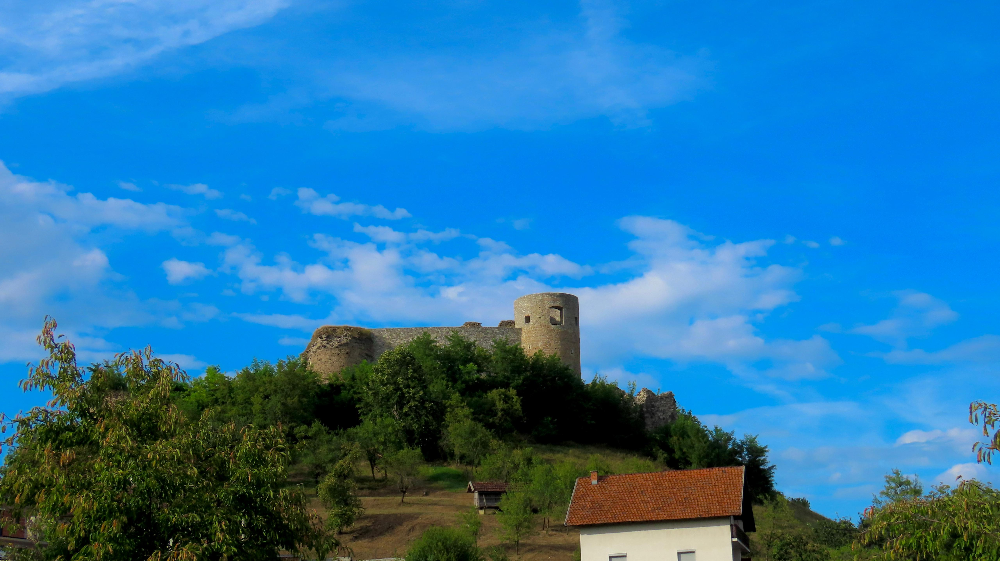
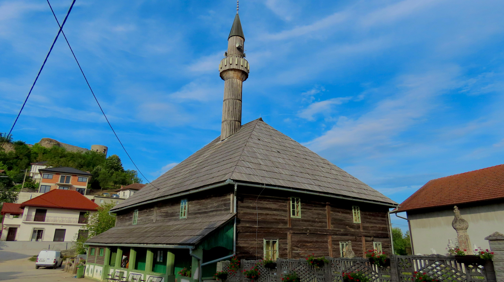
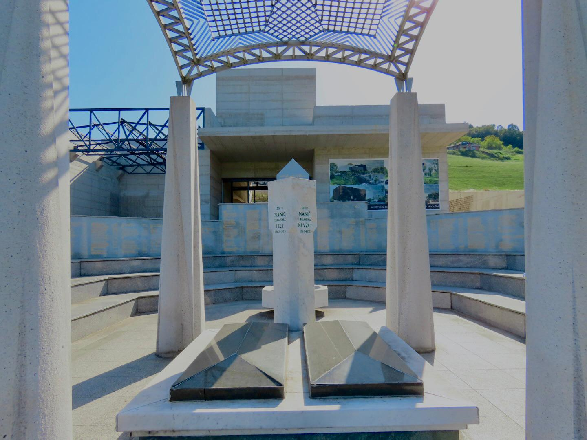
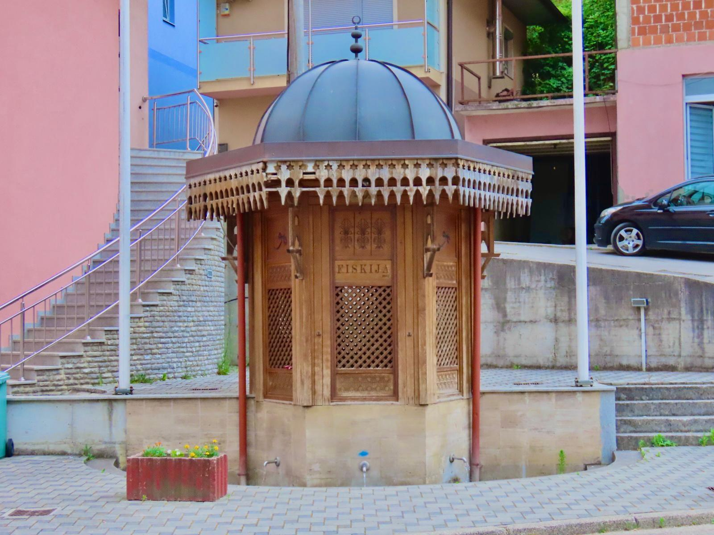
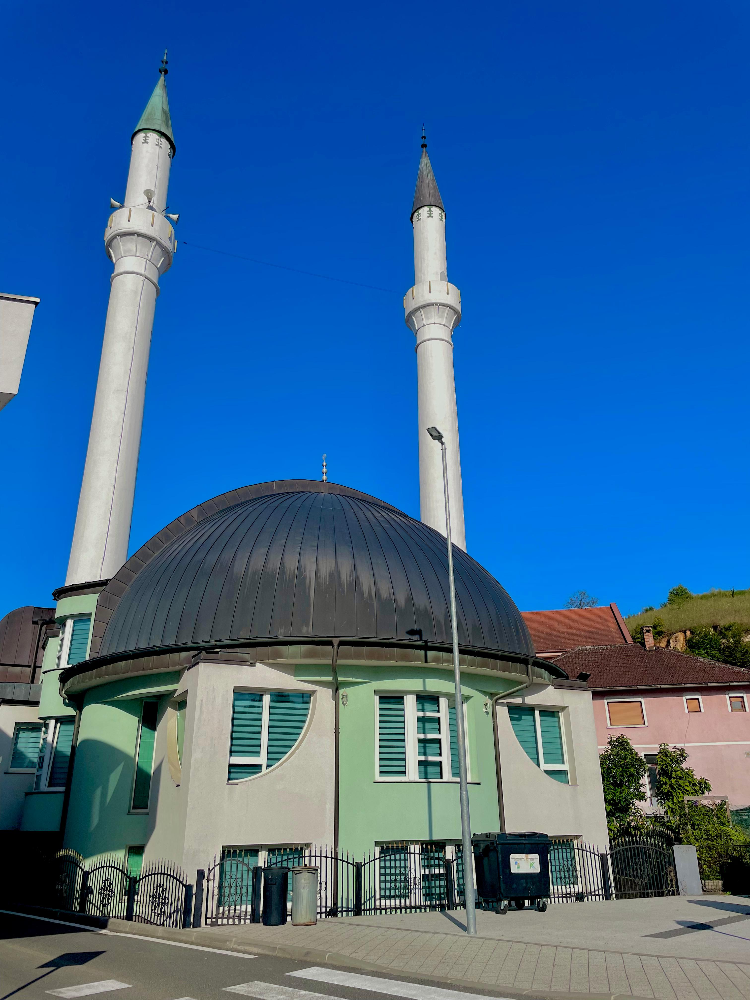
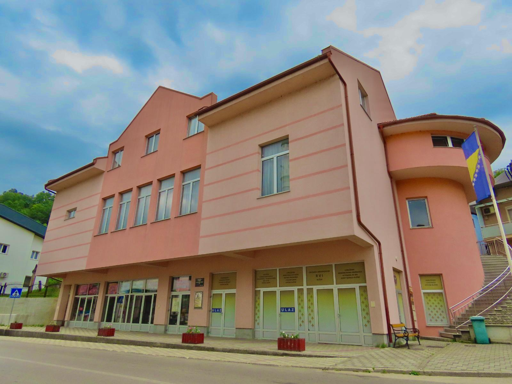
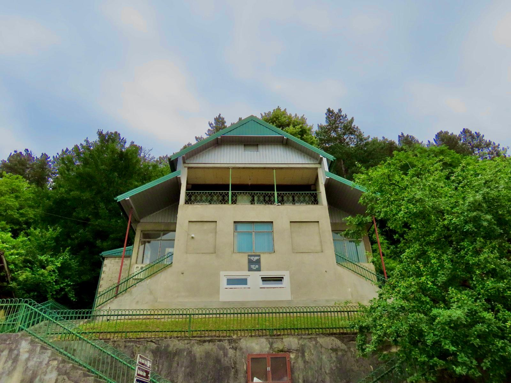
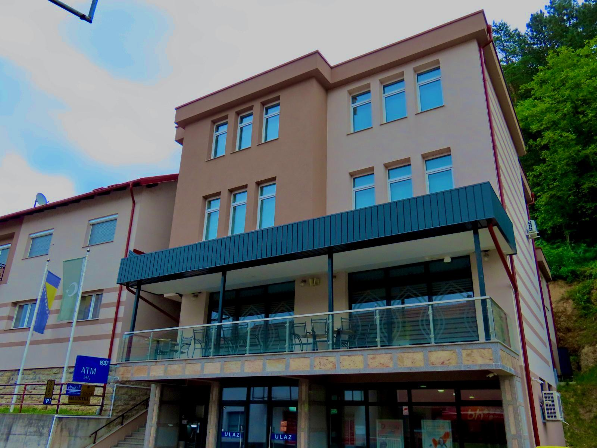
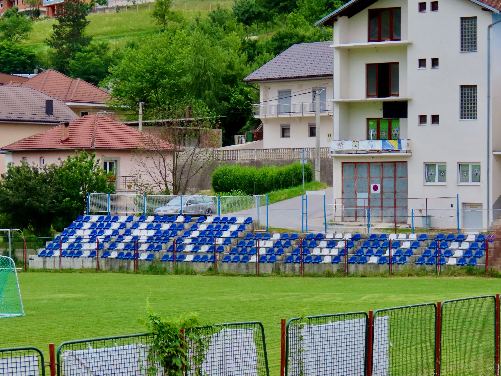
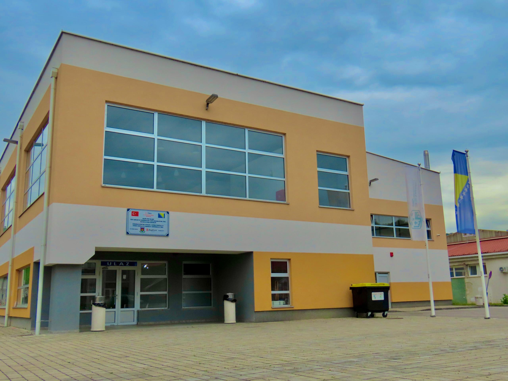

VisitBužim
VisitBužim
VisitBužim
VisitBužim
Mali grad velikih ljudi
Bužim je brdovita Općina smještena u Unsko-Sanskom kantonu na sjeverozapadu Bosne i Hercegovine. Jedna je od osam Općina koje se nalaze na Unsko-sanskom kantonu i sastoji se od 14 zasebnih mjesnih zajednica koje uključuju: Bužim, Bag, Brigovi, Konjodor, Bućevci, Varoška rijeka, Vrhovska, Zaradostovo, Jusufovići, Elkasova rijeka, Lubarda, Mrazovac, Radoč i Čava. Prvi put se službeno spominje 1334. godine ali njena historija potiče duže od toga. Neki od prvih arheoloških tragova potiču još iz perioda 8. stoljeća prije nove ere.
Danas se glavno naselje nalazi u podnožju srednjovjekovnog grada i tvrđave (Stari grad). Bužim se prostire na površinu od 129 km2 sa stanivništvom od 19 340, po popisu stanovništva iz 2013. godine sa gustinom naseljenosti je oko 150 st/km 2. Najveći vrh u Bužimu je Radoč na 630 m, a po nadmorskoj visini se još ističu: Ćorkovača (603 m) , Konjodor (Kaukovića brdo 476 m) , Veliko brdo (464 m) , Lubarda (420 m) , Čajino brdo (352 m).
Kroz grad protječe rijeka “Bužimica” i duga je 13km. Bužimnica izvire ispod Kaukovića Brda i zajedno sa rijekom Čaglicom čini rijeku Glinicu, koja se ulijeva u Glinu. Bužim je bogat brojim potocima i manjim rijekama te jednim jezerom. Jezero “Brana” je vještačko jezero u Bajrektarevića Polju i predstavlja najveću vodenu akumulaciju u Bužimu. Zauzima površinu od 10.000m 2, a duboko je 2-12m . Jezero je izgradjeno za potrebe rudnika mangana, koji se nalazi pored jezera, a osim toga je i jedini rudnik mangana u cijeloj Bosni i Hercegovini (više nije u funkciji). Privreda se danas sastoji uglavnom od znatne poljoprivredne industrije, drvne industrije i drugih manjih industrija poput proizvodnje.
Upoznajte Bužim
Stari grad Bužim

Srednjovjekovni grad i tvrđava
Stara drvena džamija

Džamija iz perioda Osmanskog carstva
Turbe

Spomenik Izetu i Nevzetu Naniću
Fiskija

Mala gradska česma u Čaršiji
Gradska džamija

Centaralna džamija na Čaršiji
Dom kulture

Centar za kulturna dešavanja u Bužimu
ULD "Lovac" Bužim

Sjedište lovačkog društva u Bužimu
Islamski centar

Medžlis islamske zajednice u Bužimu
NK Vitez Bužim

Dom nogometnog kluba Viteza
Sportska dvorana

Centar spotskih dešavanja Bužima